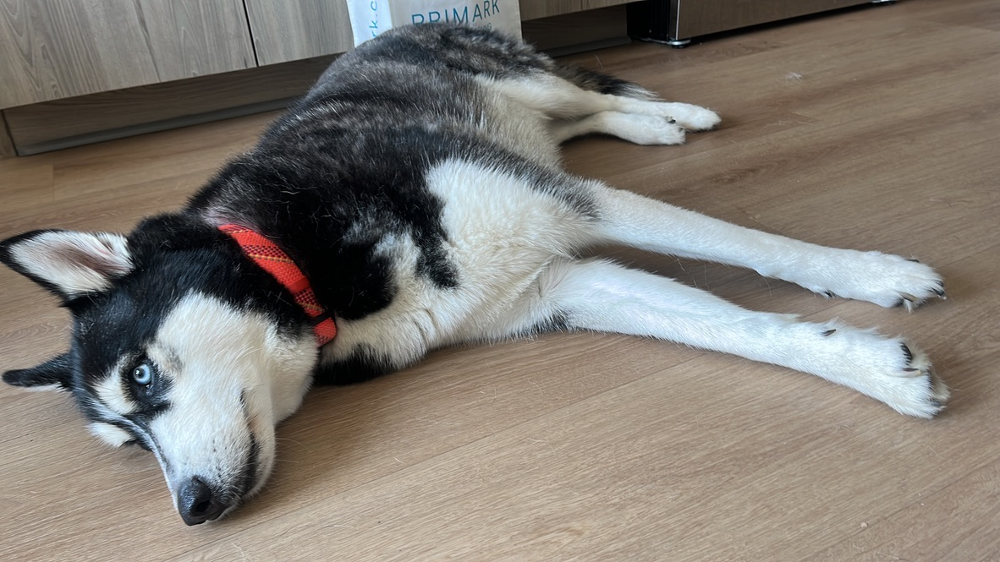
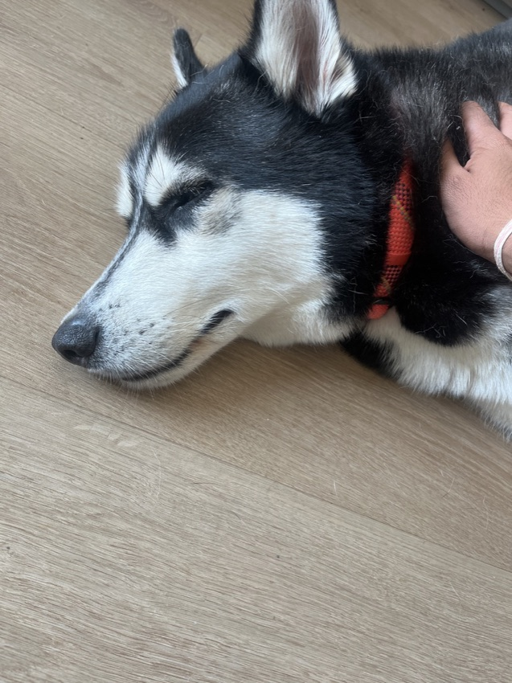
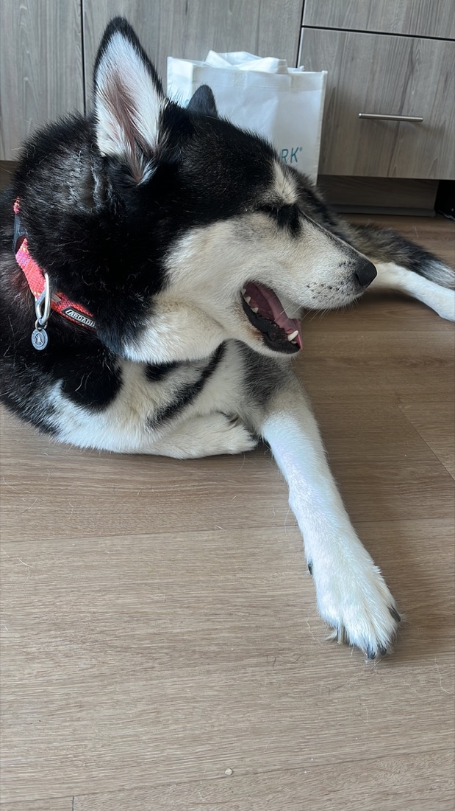
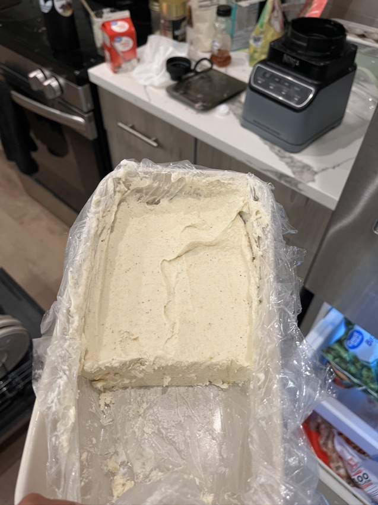

Now
Most of this site is about things I have built. This page is about everything else. A few photos from ordinary days, for now; more when there is more.
Photos




Most of this site is about things I have built. This page is about everything else. A few photos from ordinary days, for now; more when there is more.



